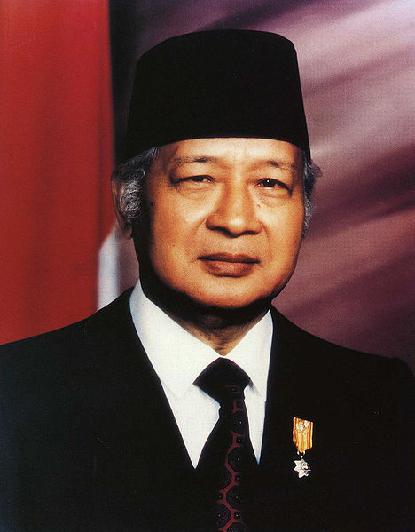

Basic Card
Card Title
BTS dan label mereka, Big Hit Entertainment, mulai mengerjakan kampanye
pada awal 2017 dan berharap dapat membantu dengan pengaruh sosial mereka dalam aksi.
Pada bulan November 2017, BTS dan Komite Korea untuk UNICEF mengumumkan
kemitraan mereka, mendukung kampanye Love Myself mereka dan kampanye
#ENDviolence dari UNICEF.Sejak itu,
BTS mulai mempromosikan kampanye dan mengumpulkan dana Love Myself.
Barang dagangan resmi untuk kampanye ini dirilis dan tersedia untuk
dibeli melalui toko online BTS.
Card Title
BTS dan label mereka, Big Hit Entertainment, mulai mengerjakan kampanye
pada awal 2017 dan berharap dapat membantu dengan pengaruh sosial mereka dalam aksi.
Pada bulan November 2017, BTS dan Komite Korea untuk UNICEF mengumumkan
kemitraan mereka, mendukung kampanye Love Myself mereka dan kampanye
#ENDviolence dari UNICEF.Sejak itu,
BTS mulai mempromosikan kampanye dan mengumpulkan dana Love Myself.
Barang dagangan resmi untuk kampanye ini dirilis dan tersedia untuk
dibeli melalui toko online BTS.
Image Card

Soeharto
Soeharto adalah presiden RI yang ke 2

BJ Habibie
BJ Habibie adalah presiden RI yang ke 3

KH. Abdurrahman Wachid
KH. Abdurrahman Wachid adalah presiden RI yang ke 4